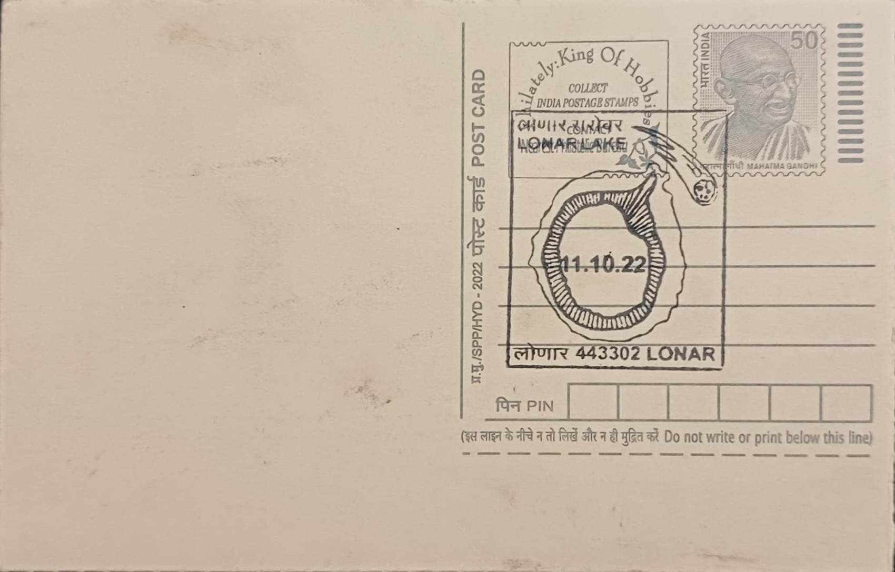

Lonar Lake
लोणार सरोवर


Lonar Lake takes its name from the demon Lonasura, who, according to local legend recorded in the Padma Purana and other texts, was slain at this spot by an avatar of Vishnu after terrorising the region; the depression left behind is said to have filled with water to form the lake. Geologically, the crater has a very different and far more recent origin: it was gouged out roughly 50,000 years ago when a meteorite estimated at around two million tonnes struck the basalt flows of the Deccan Plateau at hypervelocity, making the legend a folk explanation layered onto a genuine impact scar that long predates human settlement in the area.
The lake lies in Buldhana district near the town of Lonar, roughly 150 kilometres from Aurangabad, and is counted among the very few hypervelocity impact craters on Earth formed in basalt rather than granitic or sedimentary rock, giving it particular value to planetary scientists studying cratering on basalt-rich bodies such as the Moon and Mars. The circular crater is about 1.8 kilometres in diameter and roughly 150 metres deep, with a saline, alkaline lake occupying its floor and dense forest covering its inner slopes; the surrounding area was declared a wildlife sanctuary by the Maharashtra government and the wetland was recognised under the Ramsar Convention in 2020, giving the site standing as both a geological monument and a protected ecological zone.
Ringing the crater rim and its inner slopes are around a dozen temple structures, several believed to be over a thousand years old, built largely in the Hemadpanthi style associated with the medieval Deccan, using closely fitted stone with minimal mortar. The most prominent, the Daitya Sudan temple dedicated to Vishnu's slaying of Lonasura, stands near the crater edge and is the best preserved of the group, while others, including the Kamalja Devi, Vishnu Mandir, Mora Mahadev and Gomukh temples, survive in varying states of ruin along the slopes and lake margin. The lake itself supports a closed, highly saline and alkaline ecosystem dominated by algae, cyanobacteria and halophilic microorganisms that most conventional freshwater species cannot tolerate, a condition scientists have studied since the site first drew geological attention in the late nineteenth century.
In the summer of 2020, the lake's water turned a vivid pink, prompting the Maharashtra forest department to send samples to the Nagpur-based National Environmental Engineering Research Institute and the Agharkar Research Institute in Pune; researchers traced the colour change to a bloom of salt-loving Haloarchaea microbes, encouraged by reduced human activity during the pandemic lockdown, low rainfall and the resulting rise in the water's salinity and pH. The colour reverted once the monsoon diluted the lake and lowered its salinity, but the episode drew international media attention and renewed scientific interest in the crater's microbial ecology, adding to earlier findings, including a 2010 NASA-linked study and subsequent work by the Indian Institute of Technology Bombay, that examined the site's impact-generated minerals and their resemblance to materials returned from the Moon.
Today the Lonar crater and its temple cluster are managed jointly by Maharashtra's forest department, as custodian of the wildlife sanctuary, and the state archaeology authorities responsible for the monuments on its rim, while researchers from institutions such as IIT Bombay continue to monitor the lake's changing water levels, which in recent years have risen enough to partially submerge the Kamalja Devi temple steps. The state government has also pursued UNESCO World Heritage recognition for the site, reflecting an ongoing effort to formalise protections for a crater that functions simultaneously as a pilgrimage stop, a field laboratory for impact geology, and a Ramsar-listed habitat for resident and migratory birds.
| Date of Introduction | October 11, 2022 |
|---|---|
| Address | Sub Postmaster, |
| Lonar SO, | |
| Buldhana (dt.), Maharashtra - 443302. |